Desktop: 1440 × 1000. Mobile: 390 × 844. Pass 2 REA screenshots use the shared card, regrouped sections, instant saving and working search. Full-page screenshots; click an image to view at full resolution. References captured from the signed-in chess.com settings pages without changing account settings.
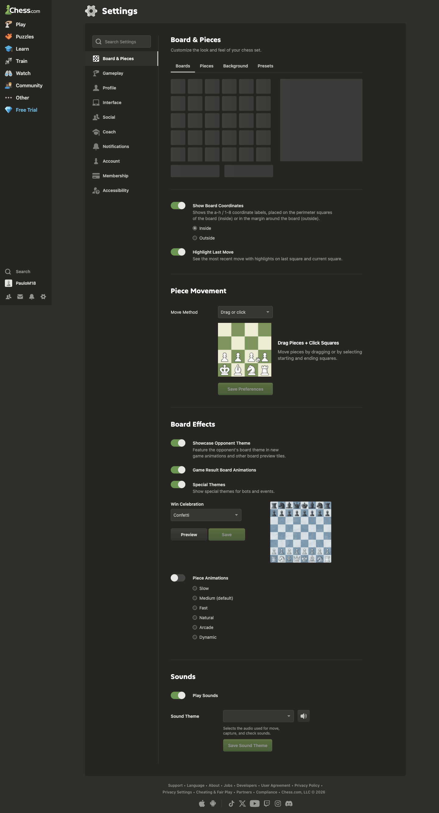
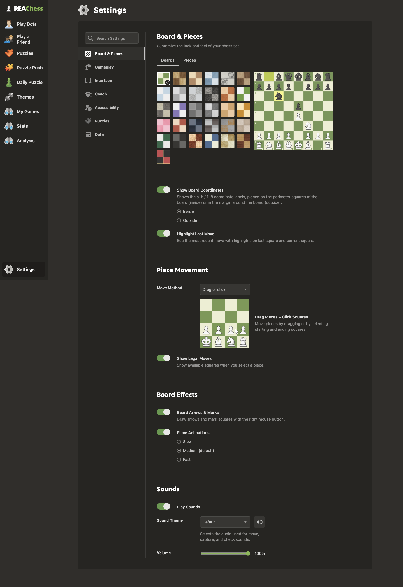
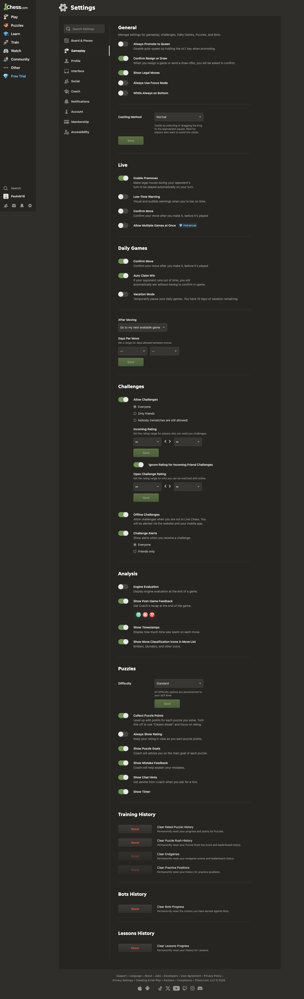
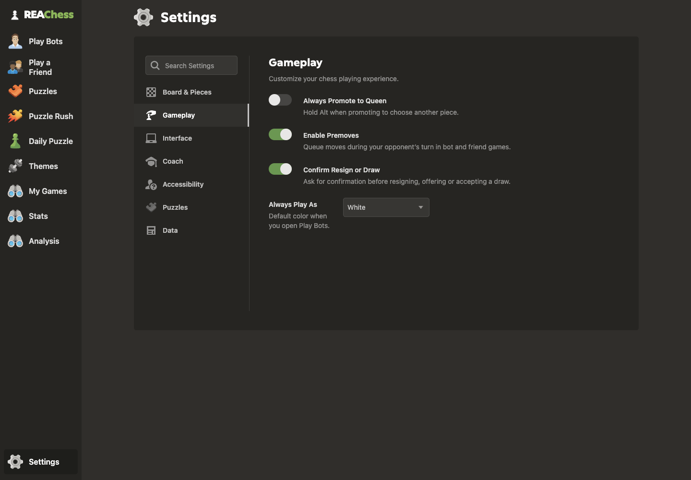
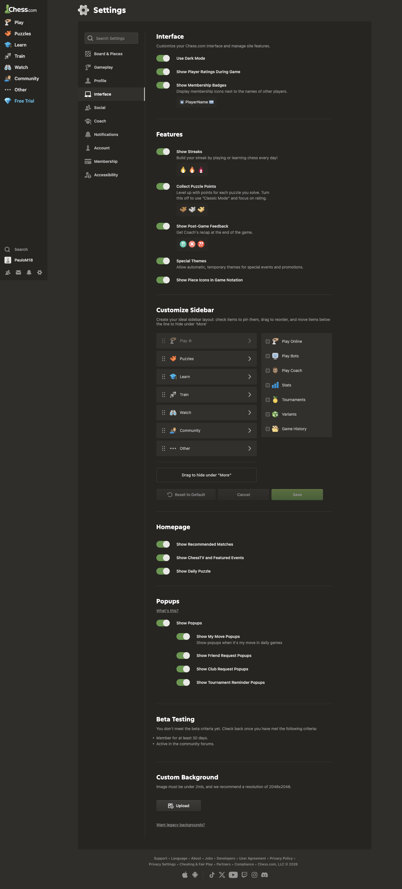
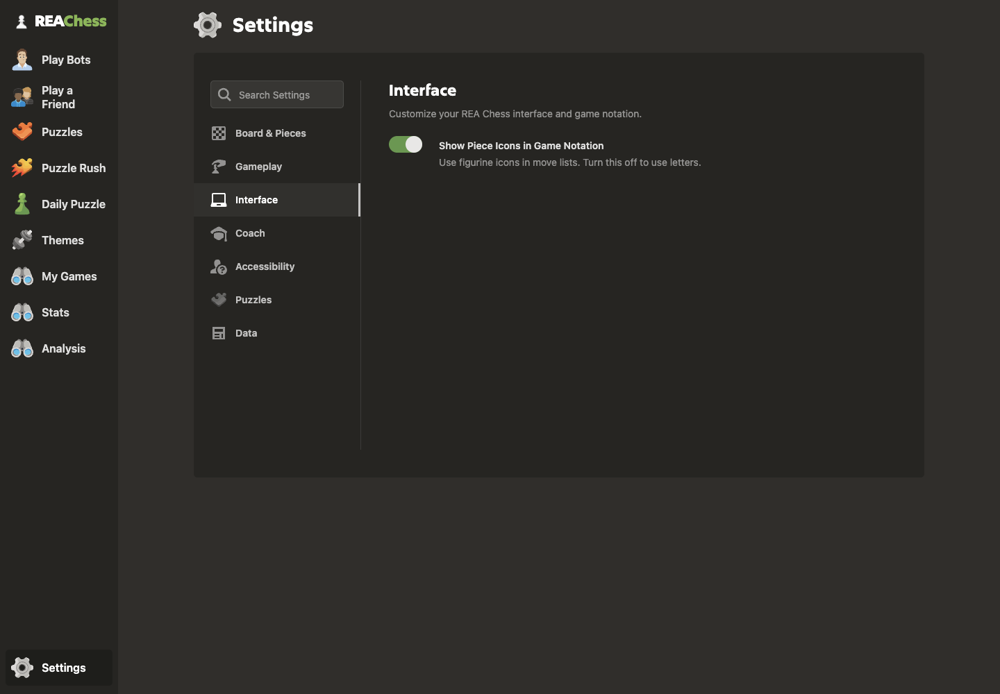
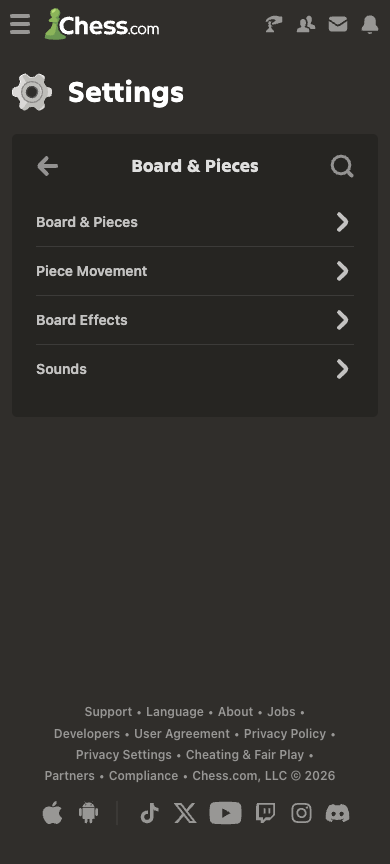
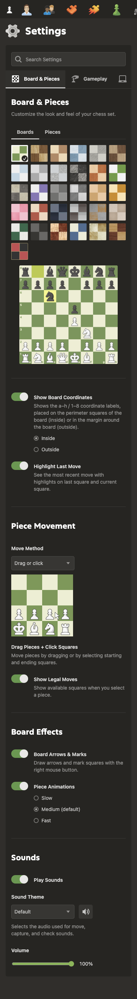
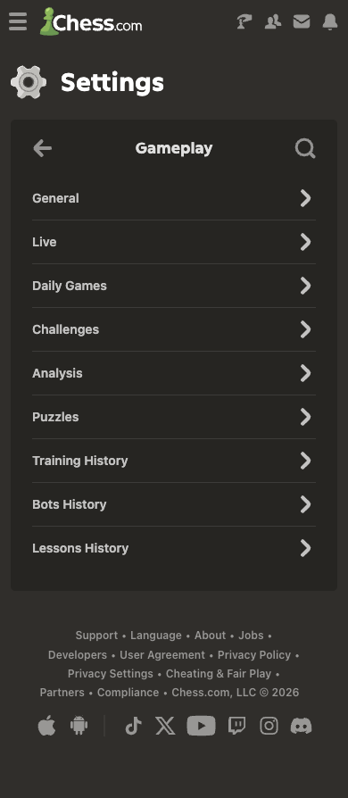
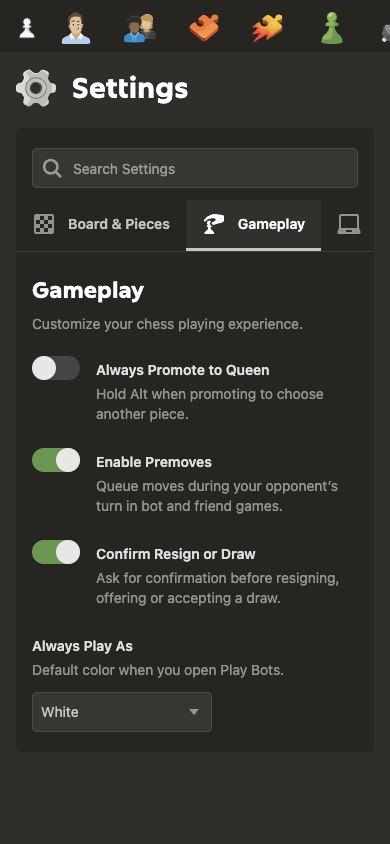
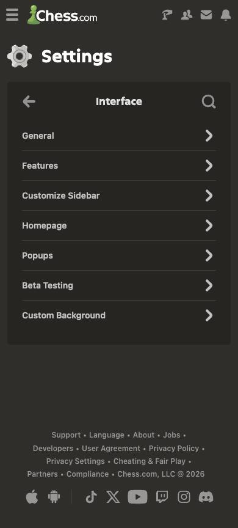
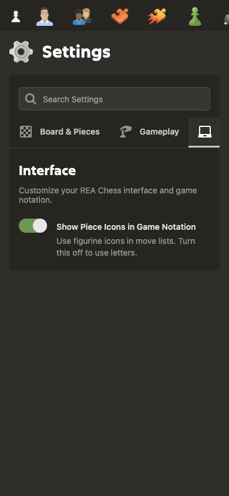